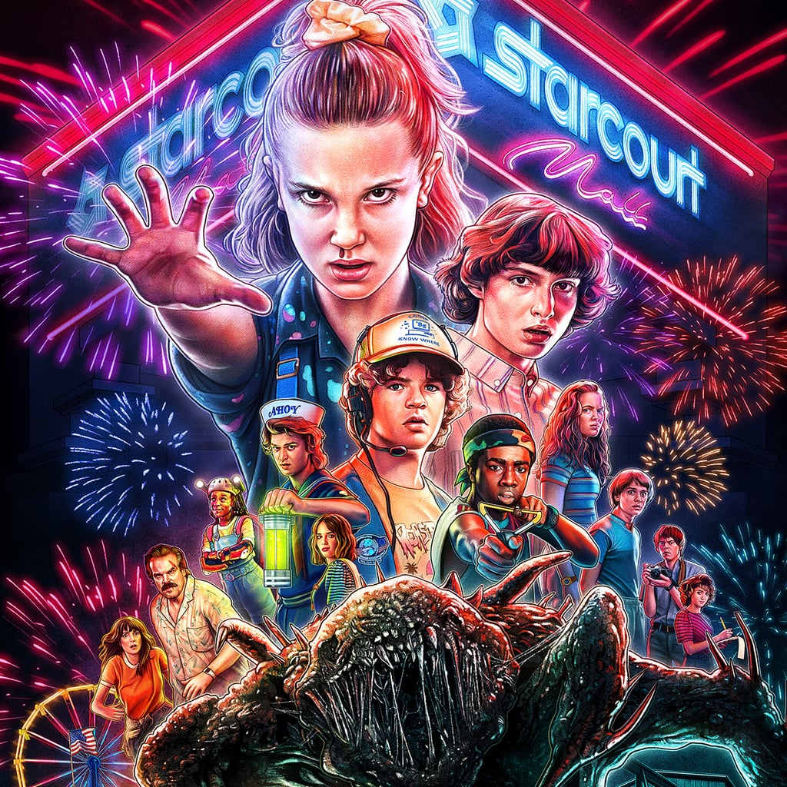
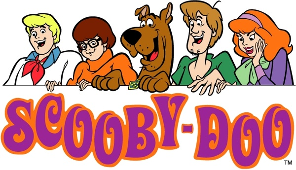
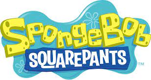

Top 1
Stranger Things
The citizens of a tiny hamlet begin to learn mysteries of a government experiment, gateways to another planet, and terrible beasts after a little kid mysteriously vanishes.
Top 2

The 100
Set ninety-seven years after a nuclear war has wiped out civilization, a spaceship carrying humanity's lone survivors returns to Earth with one hundred juvenile delinquents in the hopes of repopulating the planet.
Top 3

Prison Break
The plot centers on a guy who was condemned to die for a crime he did not commit, and his brother's complex plan to assist him avoid death.
Top 4

Squid Game
The show centers on a competition in which 456 contestants, all of whom are deeply in debt, risk their lives by playing a series of lethal children's games in the hopes of winning a $45.6 billion reward. The series' title is based on a Korean children's game of the same name.
Top 5

All Of Us Are Dead
Students who have been trapped must flee their high school, which has become the epicenter of a zombie virus spread.
Top 6
Scooby Doo
Velma, Fred, Daphne, Shaggy, and Scooby-Doo, Shaggy's high-strung, talking Great Dane, get into their green van, the Mystery Machine, and hit the road in quest of strange occurrences to investigate.
Top 7

Regular Show
A park's groundskeepers are Mordecai, a blue jay, and Rigby, a raccoon. But these closest pals are slackers who don't let their employment get in the way of having a good time.
Top 8
Spongebob Squarepants
In the city of Bikini Bottom on the Pacific Ocean's floor, a square yellow sponge named SpongeBob SquarePants lives in a pineapple with his pet snail, Gary. He works at the Krusty Krab as a fry cook.
Top 9
Naruto
It chronicles the narrative of Naruto Uzumaki, a teenage ninja who aspires to be the Hokage, the village's leader, and wants acclaim from his peers.
Top 10

Ben 10
Ben Tennyson, a ten-year-old child, discovers a magical gadget that allows him to transform into ten distinct extraterrestrial heroes, each with their own set of skills.